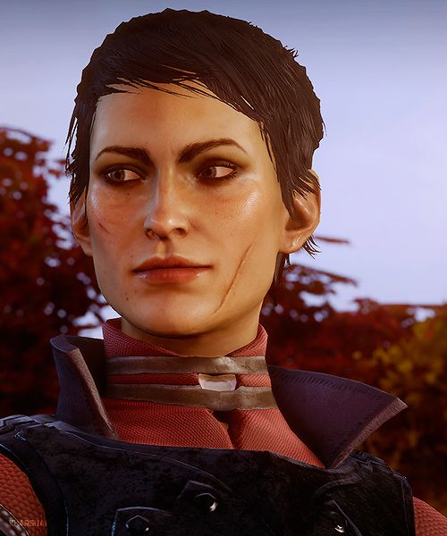

| Race | Human |
| Gender | Male |
| Class | Mage |
| Title | Altus Enchanter (formerly) Magister |
| Affiliation | Inquisition (conditional) Lucerni |
| Specialization | Necromancer |
| Quests | In Hushed Whispers Dorian's Request One Less Venatori Last Resort of Good Men The Magister's Birthright |
